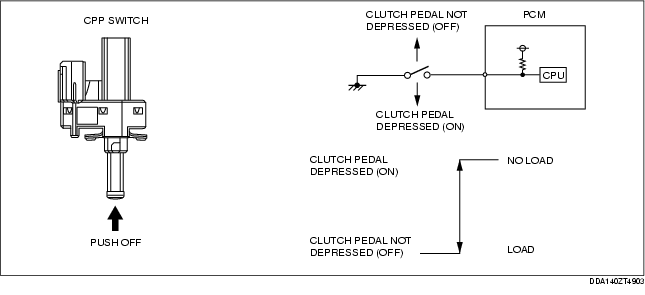

CLUTCH PEDAL POSITION (CPP) SWITCH CONSTRUCTION/OPERATION [ZY]
id0140001777c0
• When the clutch pedal is depressed, the contact closes (ON) and the PCM detects a voltage of 1.0 V or less. When the clutch pedal is not depressed, the contact opens (OFF) the PCM detects a voltage of B+.
